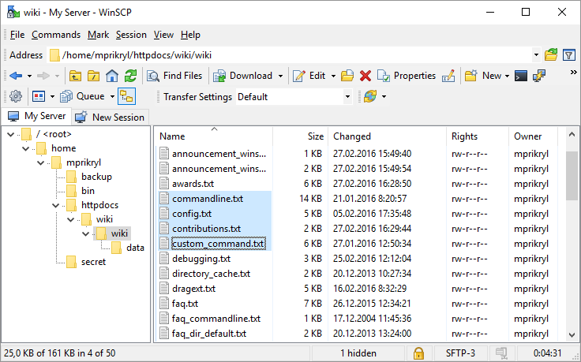
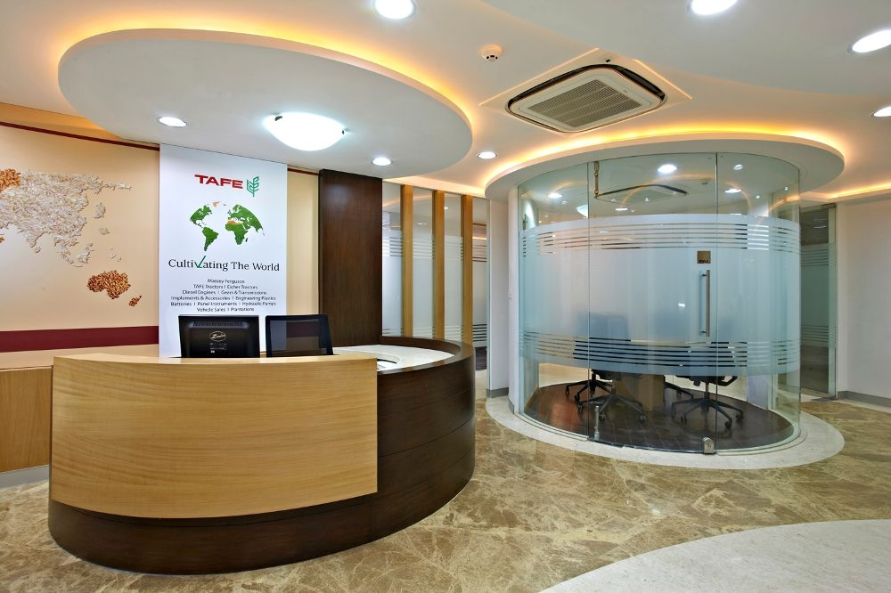
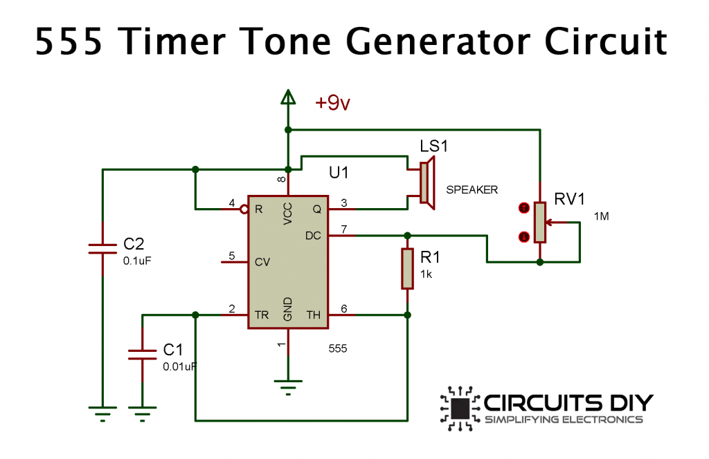
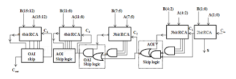

I am Ezekiel Jim Lowell. I was born at Thoothukudi in 16 august 1995. Then I went to Madurai at the age of 3 in 1998. I had completed pre-primary stage of school at Madurai. After that I came to Chennai at the age of 5 in 2000. I had stayed in Santhosapuram and joined in Saint Pauls matriculation school located near Santhosapuram. I had completed 1st to 5th at this school. I had joined at Madambakkam government school and completed 6th to 10th standard. In Zion matriculation school, I had completed 11th and 12th standard. I had joined at agni college of technology to completed BE in 2013. I have completed BE/ECE in 2017. Then I have joined in a company TAFE(Tractors and Farm Equipment limited). This company is manufacturing tractors, parts, batteries, paints and store oil. I was joined as Project Assignee in Dealer Management System(DMS) for 1 year contract. After contract completed, i had completed courses in javaScript at FITA and also done React course at Credo systemz. Then i have joined at SrinSoft Technologies as Software Trainee. Their I was trained in synchronous, asynchronous JavaScript and React JS. I have done some tasks in a project called TES-$-prising. Due to project unavailability I was relieved from SrinSoft.
School
Upto 10th

I have studied in government school upto 10th standard. School has playgrounds inside school compound and separately. It is located in Madambakkam. I have played many games. some of the games are kabbadi, koko, etc. I have got 482 out of 500 in 10th standard. Teachers are leniant. I have completed 10th on march 2011.
11th and 12th

I have studied 11th and 12th standard in Zion matriculation school. It is located in Indira nagar near Selaiyur. I have got 928 out of 1200 in 12th standard. I have completed 12th on march 2013
| Exam | Board | Marks | Percent |
|---|---|---|---|
| SSLC | StateBoard | 482/500 | 96.40% |
| HSC | StateBoard | 928/1200 | 77.33% |
College
I had done Batchelor of Engineering in Agni colleage of technology located in Thalambur near Navalur. College arranged for Industrial visit to Sriharikota. I had seen two launch pads, more control rooms and mechanical shed. There are many checkposts in between the building structures. sMy CGPA is 7.43. I have completed BE in 2017.
| Semester | GPA |
|---|---|
| 1 | 7.269 |
| 2 | 8.042 |
| 3 | 7 |
| 4 | 7.962 |
| 5 | 7.609 |
| 6 | 7.125 |
| 7 | 6.909 |
| 8 | 7.5 |
| CGPA | 7.43 |
Skills
Win SCP
Win SCP is a software used to monitor files by using Secured File Transfer Protocol(SFTP). It is used to check files transferred from SAP server to Dealer Management System(DMS) and DMS to SAP. Files all are generated from SAP by web methods. I have to schedule task for files by priority wise in web methods. For example Invoice files are generated every one hour out of 24 hours. During month end, large numbers of files need to be pushed from SAP to DMS. At that time some problem may arise in the file generation and files may not be generated automatically from SAP. I need to rectify the issues and run back web methods and send files to DMS and monitor whether invoice files are uploaded in DMS. Parts, pricing, HSN tax files and many other files were generated automatically from SAP and went to DMS periodically. This process for outbound files. Next is inbound files which are generated from DMS and posted to SAP through web methods. These files also generated in large numbers during month end and needs to be pushed to SAP.
SAP

SAP stands for Systems, Applications & Products in Data Processing. SAP is a German software and has many types(SAP FICO, SAP SD, SAP ABAB, etc.) Enterprise resource planning (ERP) is a software used to manage datas of various departments such as accounts, procurement, project management, supply chain management. Datas are transferred database to SAP and SAP to database. It is used to generate files from data present in SAP tables automatically using web methods. Sent the generated files to dealer server. And also receive files from dealer server and post the datas present in files to SAP. Each type of information are stored as tables and can be viewed in computer with the help of SAP application. Data can be checked, generated and can be edited with particular codes. Some tables are not accessible for beginner workers. Some tables were given access for only senior workers. Editable tables were given access for important senior workers. SAP tables basically contains information about products, rates, delivery date, retail date, size, weight, warranty, tax and dealer information.
HTML

HTML is used to display just a content. There are 2 types of tag elements present in HTMl. First one is semantic elements and second is non-semantic elements. Semantic elements has purpose by its names. Examples: header, article, iframe, footer, etc. Non-semantic elements does not have meaning about its content when used. Examples: div and span. HTML elements are available as nodes in Document Object Model(DOM). DOM is represented as Tree structures.
CSS
CSS stands for Cascading Style Sheet. CSS is used for applying styles and make them as responsive. CSS has many properties includes display, color and background, position, padding, margin, width, border, box-sizing, etc. CSS have priority for elements, classes, id, *(universal selector) and inline styles. * => tag => classes => id => inline styles. * is least priority and inline styles has higher priority. Responsive design given by flex, bootstrap and media queries.
JavaScript
JavaScript is used to add functionality to web elements. There are three main parts in JS.- Synchronous JS
- Asynchronous JS
- Window and Document Object Model
Synchronous JS unblocks only when cuurent task is completed. Examples: basic codes, functions, loops, conditions are Synchronous. Asynchronous JS execution starts in parallel without blocking. But execution finishese one by one. Examples of Asynchronous are timers, promises and thenables. Async and await has synchronous behavior but works asynchronously. Await wait for promise to resolve and async function always return promise. Window object have many inbuilt methods such as alert, console, print, prompt, open, etc. By using document object model(DOM), we can take elements, set attributes, text content, append child and also give styles.
React JS
In Js, accessing DOM is slow when there are many nested elements present in html. So facebook introduced React which uses Virtual DOM.Virtual DOM is a lightweight copy of actual DOM present as JS object in memory. When a state is changed react take snapshot of virtual DOM befor update and then virtual DOM updated. Then react compares the virtual DOM snapshot and updated virtual DOM. This process is called diffing. ReactDOM updates only the changed state without refreshing entire page. Only the changed content is updated. This is called reconciliation. React makes use of JSX(JavaScript XML) to write HIML inside JS file of React. There are two types of component in React, Class and Functional components. Before version 16.8, state can be defined and updated using class component only. But in class component, code strcuture is large. So in October 2018 at React conference, react hooks was introduced for to include states in functional components. Then after that code size reduced considerably. Advantages of React are speed, code reusability, easier to debug using React Developer tools.
TAFE
TAFE(Tractors And Farm Equipment limited) manufactures tractors, parts, store oil and eicher vehicles. I had joined as Project Assinee in Dealer Management System. Two flow of datas needs to be monitored. First one is outflow of data from SAP to dealers: reconciliation of data from SAP to Dealer server for Invoices of tractors and dealers, parts, oil, rollout new dealers, control unit mapping for dealers and workers, pricing and warranty. Second flow from dealer server to SAP: status files such delivery, retail, delivery return, retail return, sale order, purchase order and service invoice files came from dealer server and transferred through SFTP(Secured File Transfer Protocol) and posted to SAP by Remote Function Call(RFC).
SrinSoft

I was joined in SrinSoft Technologies in April 1st as a Software Trainee. Training was given on JS concepts(synchronous and asynchronous programming) and React JS. In a project called TES-$-pricing, tasks were assigned to me. First task was fetching data from API using React JS for particular columns in the tables. Next task was React Popover when a user clicks on a particular elements in the coloumn. Also fetch data to the elements present in popover.
My interest
I am interested in listening english songs. My favourites are Allan Walker, Carly Rae Jepson, etc. I am interested in cooking. I know how to make white sauce pasta. I am interested in listen to daily affairs through YouTube. Also interested in playing games by PC, mobile.
Projects
Tone generator control using 555 timer
In college, I have done mini project named Tone generator control using 555 timer is used to produce a range of sounds. It is used to generate waves like triangle, square, sawtooth & sine wave. By handling the two potentiometers of the tone generator, you can change the oscillation frequencies of the two 555 timers that work as astable multivibrators, thus generating different sounds. Used to convert electrical signal to audio.
| S.No | Components | Quantity |
|---|---|---|
| 1 | Breadboard | 1 |
| 2 | 9volt battery | 1 |
| 3 | Resistor(1K ohm) | 1 |
| 4 | Electrolytic Capacitor(0.1uF,0.01uF) | 1 |
| 5 | Potentiometer | 1 |
| 6 | 555 Timer IC | 1 |
| 7 | Speaker 8ohm | 1 |

| Pin number | Pin name | Description |
|---|---|---|
| 1 | GND | Ground |
| 2 | TRIG | Trigger, set to 1/3 of Vcc |
| 3 | OUT | Timer output |
| 4 | RESET | Reset active low |
| 5 | CONT | Comparator threshold control |
| 6 | THRES | Threshold, set to 2/3 of Vcc |
| 7 | DISCH | The low impedance discharge path |
| 8 | Vcc | Chip supply voltages (6v-12v) |
High speed carry skip adder using AOI and OAI skip logic

This project is used to increase speed for carry skip adder present in processor. In normal carry skip adder, multiplexer is used for carry skip logic. In this project, And Or Invert and Or And Invert logic is used to decrease the area and delay of skip logic.